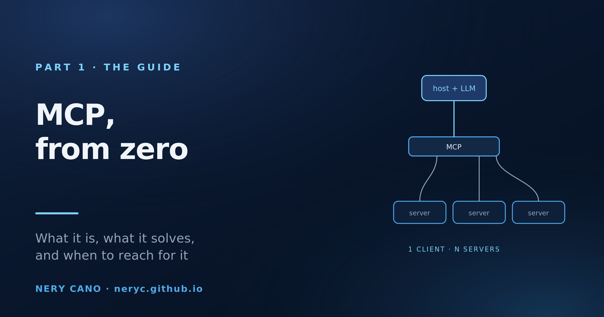
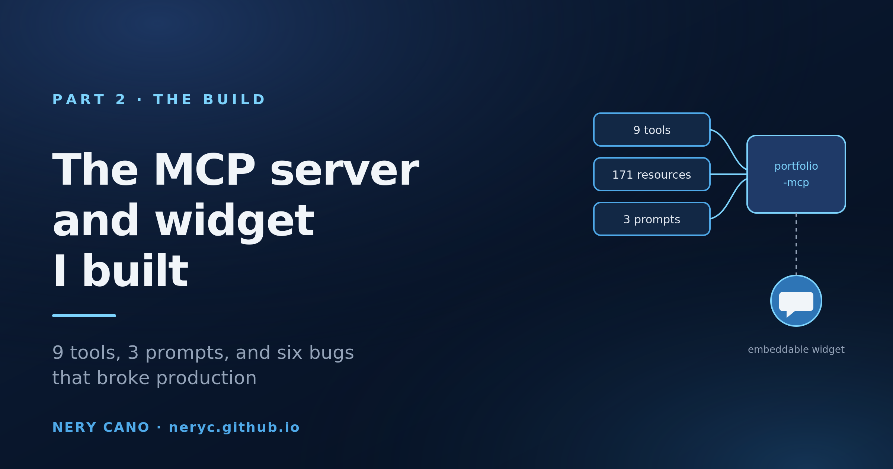
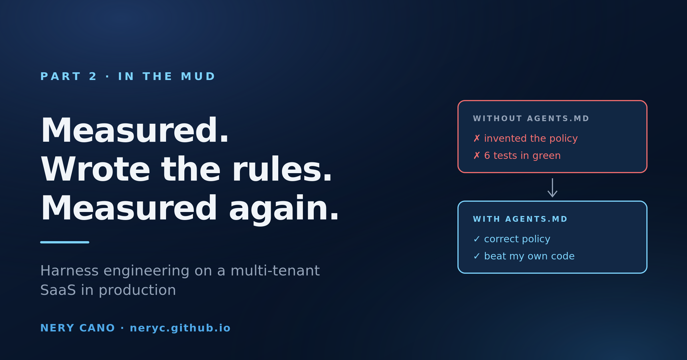
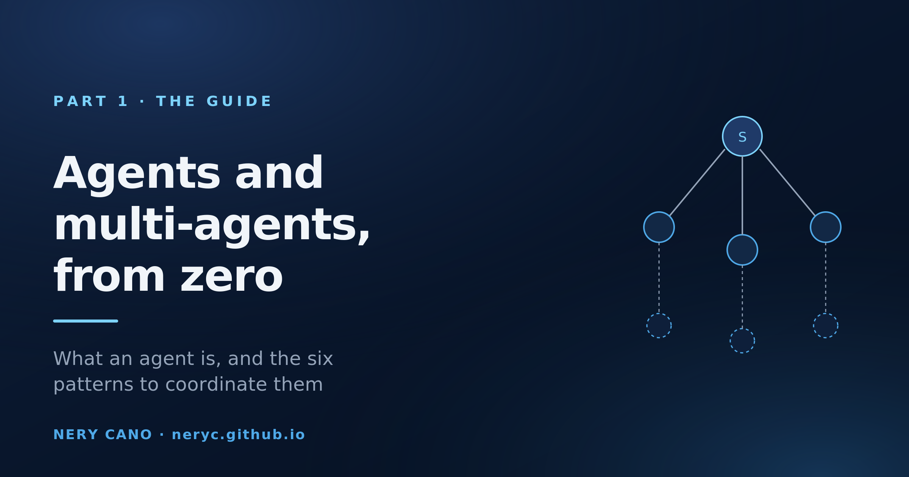
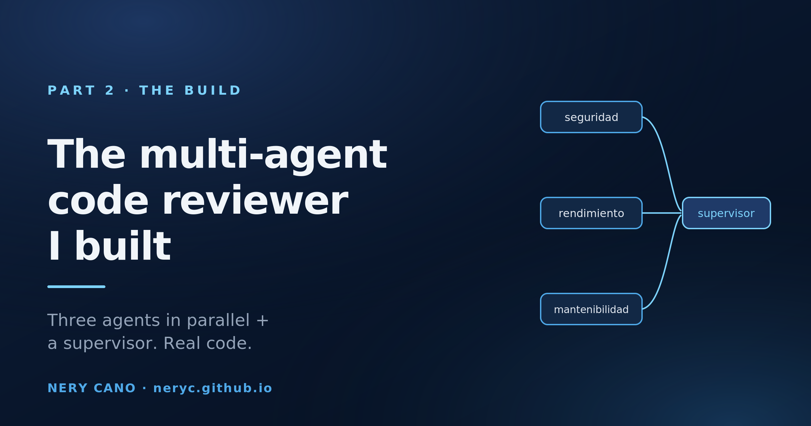
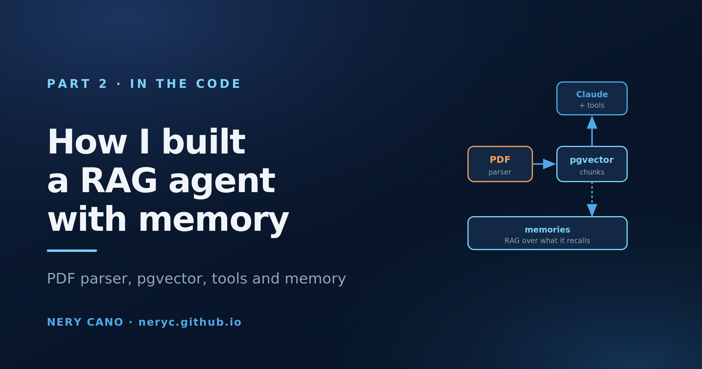

Engineering notes from the inside.
Production-grade deep-dives on AI/LLM systems I've shipped — what I built, what I learned, and the calls I'd defend in code review.

MCP from zero: what it is, what it solves, and when to use it
One protocol, three primitives, and a mandatory greeting. Everything you need to understand about MCP before writing a line of code.

Talk to My Portfolio: the MCP server and widget I built
An MCP server over my CV and a 14 KB widget that embeds it anywhere. The real code, and the six bugs that broke production.

Harness engineering on a real SaaS: I measured, wrote the rules, measured again
I gave an agent five real commits from my multi-tenant SaaS and told it nothing about the domain. It invented a permission policy, got it wrong, and wrote six tests that armored it in green.

Harness Engineering: how to design repos where AI doesn't screw up
Guides, sensors, context, evals and autonomy limits: the harness that turns an AI agent from a chaotic intern into a reliable colleague. Spoiler: the problem is your repo, not the model.

The Cleanest Pattern I've Found for Autonomous Agents: A Terminal Tool With No execute
Why ToolLoopAgent + a no-execute finalAnswer tool replaced 80 lines of brittle while-loop code in my research agent.

Agents and multi-agents, from zero
What an agent is, why you sometimes need several, and the six patterns to coordinate them. The full theory before the code.

The multi-agent code reviewer I built
Three specialists in parallel and a supervisor that consolidates. The architecture, the real code, and the six-way postmortem.

RAG from scratch: the guide I wish I'd had
What it is, what the alternatives are and how it actually gets built, explained from zero and with lots of diagrams. The full theory before the code.

How I built a RAG agent with memory
The real code, step by step: the PDF parser that survives serverless, the pgvector schema, the agent's tools and the memory loop.